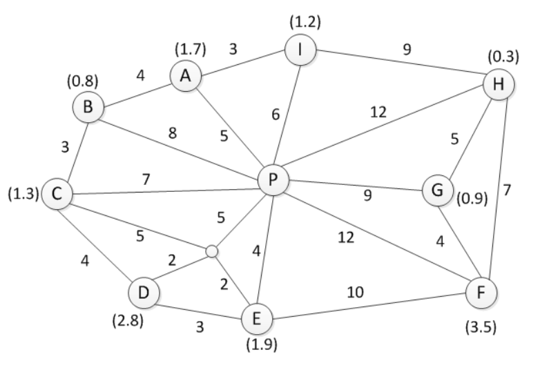
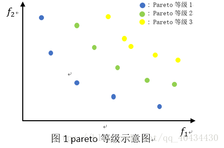
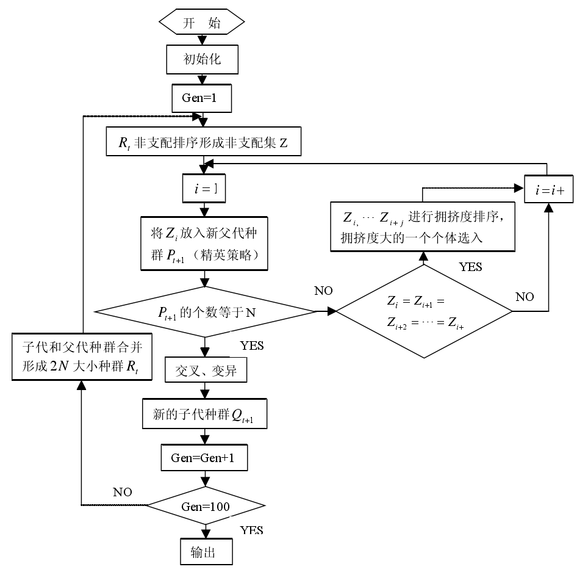
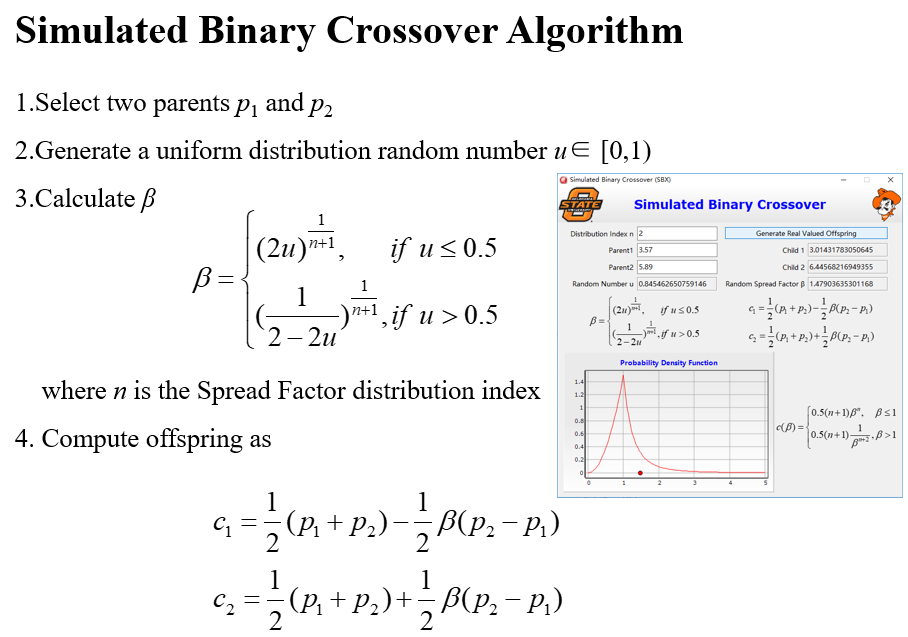
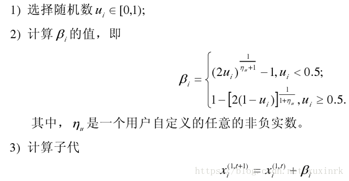
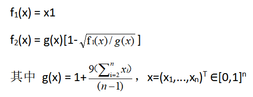
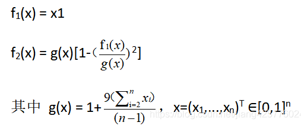
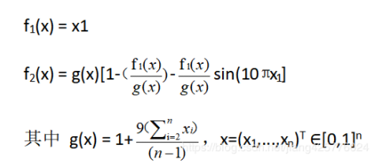
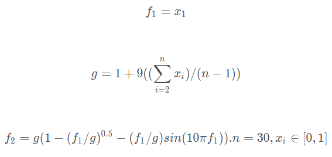
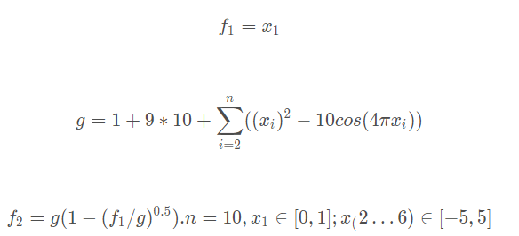

项目说明
【问题说明】
通过实际案例描述，根据配送点和业务需求量，进行最优路线的计算。
由单一起点出发，配送多个终点后再回到起点，根据车辆数量，承载限制，不同车辆服务成本、运行里程限制等条件选择最优运输路径，使成本最小化，配送订单最大化，满载率最大化（如由一个配送中心向各个销售点配送货物，通过算法确定配送中心每辆车的配送方案，包括配送至哪个客户，配送量，下一个配 送目的地）。
【用户期望】
通过算法（蚁群算法、遗传算法等，可任意选择）模型构建，利用计算机语言进行开发（不限定开发语言），最终可通过设置配送点坐标或距离，各配送点业务量，车辆装载等参数，程序能自动计算出最优路线顺序。
【 任务要求】
现有一配送网络，图中 P 为配送中心，其余 A-I 为客户的接货点，所有客户的位置距离固定，各边上的数字为公里数，括号内的数字为需输送到各接货点的货物量，单位为吨。假设该配送中心有最大装载重量为 2 吨和 5 吨的两种货车，并限制车辆一次运行路线距离不超过 35 公里，每个派送点只由一辆车服务一次， 每辆车只能服务一条路线，车辆一律由配送中心出发，完成任务后返回配送中心，快递车辆配送过程中无装货，只考虑卸货。每个点卸货时间固定为 5 分钟，车辆每小时行驶距离为 10
千米，每个派送人员工作时间为 8 小时，请参考内容信息通过算法和程序计算需要的车辆数，最优路径及配送时间。

根据以上案例，依次轮推，当配送点增加或减少，各配送点之间距离，货物需求量，配载车辆装载量变化时，该算法及程序依然适用。
【技术要求与指标】
开发要求：
（1）可设置配送点个数，设置网点和各配送点及配送点与配送点之间的距离；
（2）设置各网点的货物量，车辆数量、车辆巡回里程限制，车辆的承载量，装卸时间，配送时长等参数；
（3）根据变量值系统可以给出最优解决方案；
（4）必须采用一种算法应用于程序中
提取要求
车辆一次运行路线`\leq`35
车辆装载重量`\leq`2或`\leq`5
配送人员工作时间`leq`8
车速10km/h
Pareto（帕雷托）理论
即二八定律
是19世纪末20世纪初意大利经济学家帕累托发现的。他认为，在任何一组东西中，最重要的只占其中一小部分，约20%，其余80%尽管是多数，却是次要的，因此又称二八定律
非支配解(Pareto解、不受支配解、Pareto最优解)
在有多个目标时，由于存在目标之间的冲突和无法比较的现象，一个解在某个目标上是最好的，在其他的目标上可能是最差的。这些在改进任何目标函数的同时，必然会削弱至少一个其他目标函数的解 称为非支配解或Pareto解。
一组目标函数最优解的集合称为Pareto最优集。最优集在空间上形成的曲面称为Pareto前沿面。Pareto 在1986 年提出多目标的解不受支配解(Non-dominated set)的概念，其定义为：假设任何二解S1及S2对所有目标而言，S1均优于S2，则我们称S1支配S2，若S1没有被其他解所支配，则S1 称为非支配解（不受支配解），也称Pareto解。

Pareto改进
Pareto改进 (Pareto Improvement)是指一种变化，在没有使任何人境况变坏的前提下，使得至少一个人变得更好。
一方面，帕累托最优是指无法进行Pareto改进的余地的状态；
另一方面，Pareto改进是达到帕累托最优的路径和方法。
Pareto Front
Pareto解的集合即所谓的Pareto Front。在Pareto front中的所有解皆不受Pareto Front之外的解（以及Pareto Front 曲线以内的其它解）所支配，因此这些非支配解较其他解而言拥有最少的目标冲突，可提供决策者一个较佳的选择空间。在某个非支配解的基础上改进任何目标函数的同时，必然会削弱至少一个其他目标函数
Pareto Optimal（帕累托最优）
Pareto Optimal在维基的解释是：“不可能再改善某些人的境况，而不使任何其他人受损”。帕雷托最优的定义：帕雷托最优是资源分配的一种状态，在不使任何人境况变坏的情况下，不可能再使某些人的处境变好。帕累托最优（Pareto Optimality），也称为帕累托效率、帕累托改善，是博弈论中的重要概念，并且在经济学， 工程学和社会科学中有着广泛的应用
举例1：假设现在有两个人，甲和乙，分10块蛋糕，并且两个人都喜欢吃蛋糕。10块蛋糕无论在两个人之间如何分配，都是帕累托最优，因为你想让某一个人拥有更大利益的唯一办法是从另一个人手里拿走蛋糕，导致的结果是那个被拿走蛋糕的人利益受损。
举例2：假设现在有两个人，甲和乙，分10块蛋糕10个包子。甲喜欢吃蛋糕而乙喜欢吃包子，而且甲讨厌吃包子，乙讨厌吃蛋糕（甲包子吃得越多越不开心，乙蛋糕吃得越多越不开心）。这种情形下，帕累托最优应当是：把10块蛋糕全部给甲，把10个包子全部给乙。因为任何其他的分配都会使得至少一个人手里拿着一些自己讨厌的东西，比如甲拥有10块蛋糕以及2个包子，乙拥有8个包子。这个时候，如果把2个包子从甲的手里转移到乙的手里，甲和乙都变得比原来更开心了，同时这样的转移并不会使得任何一方的利益受损。
参考博客：Pareto（帕雷托）理论
ortools工具
google的OR-Tools简介
routing模型之TSP问题
遇到问题：
运行 routing模型之TSP问题 中的代码时遇到如下报错
NotImplementedError: Wrong number or type of arguments for overloaded function 'new_RoutingModel'.
Possible C/C++ prototypes are:
operations_research::RoutingModel::RoutingModel(operations_research::RoutingIndexManager const &)
operations_research::RoutingModel::RoutingModel(operations_research::RoutingIndexManager const &,operations_research::RoutingModelParameters const &)
原因：ortools版本与网上代码不匹配
解决方法：将7.8版本降到6.10版本
查阅资料：
资料1
资料2
NSGA2 ZDT1函数测试
NSGA流程图

参考资料：基于遗传算法的多目标寻优策略的应用研究_李莉
二元竞赛选择
遗传算法中的竞赛选择方式是一种放回抽样，几元竞赛就是一次性在总体中取出几个个体，然后在这些个体中取出最优的个体放入保留到下一代种群的集合中。需要保存多少个体就重复此操作几次。
模拟二进制交叉算子

参考资料：模拟二进制交叉算子详解
多项式变异

参考资料：多项式变异
ZDT1函数
用于测试算法性能


真实结果

程序跑出来的结果
参考资料：常见测试函数
ZDT函数下载
ZDT2函数


真实结果

程序跑出来的结果
ZDT3函数

注：上图ZDT3函数有错，导致程序跑出来的结果与真实值存在错误。具体见下

真实结果

程序跑出来的结果
本来以为是陷入了局部极值，打算尝试使用双种群遗传算法，后发现是ZDT3函数存在错误，正确ZDT3函数如下

真实结果

程序跑出来的结果
ZDT4函数


真实结果

程序跑出来的结果
上述测试函数均是在变量数量为2个时进行拟合
接下来尝试在变量数量多个时候进行拟合